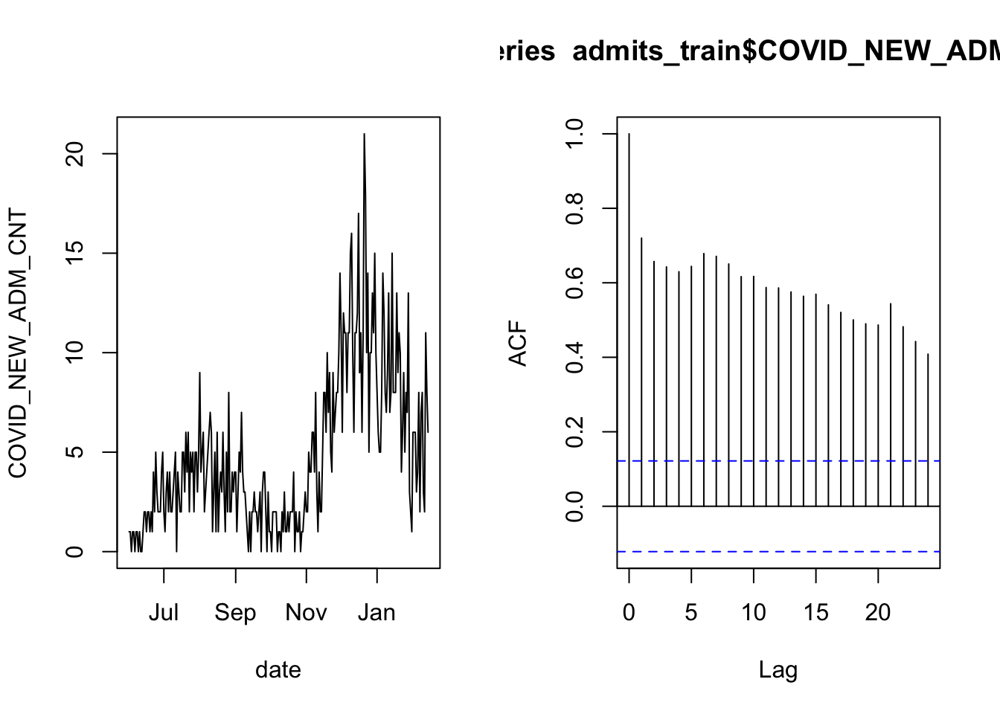
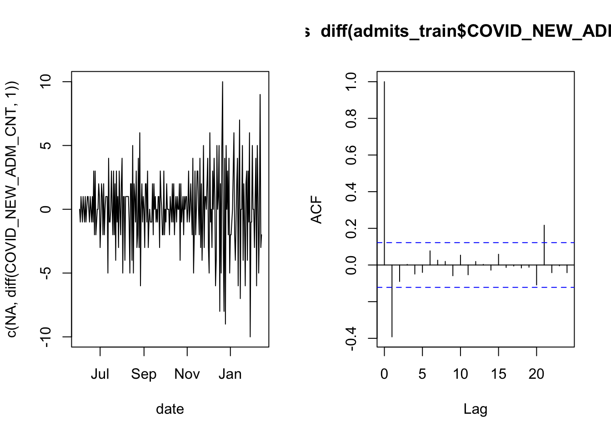
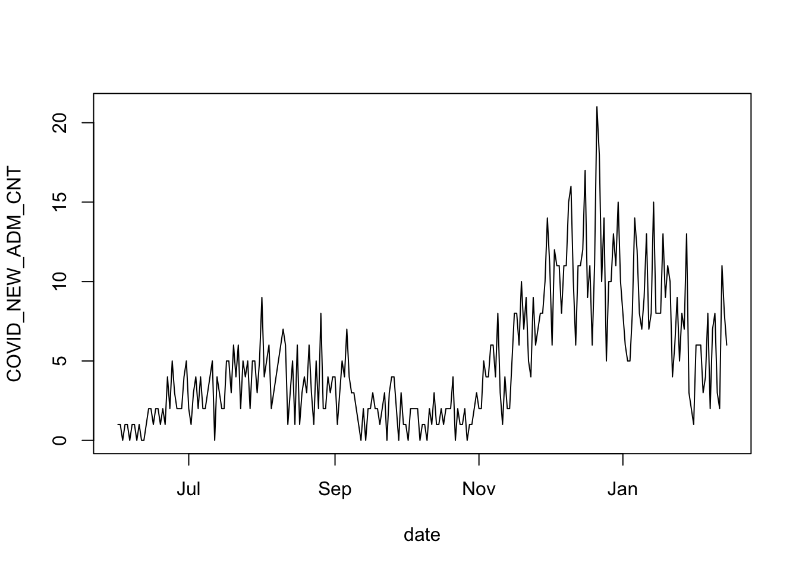
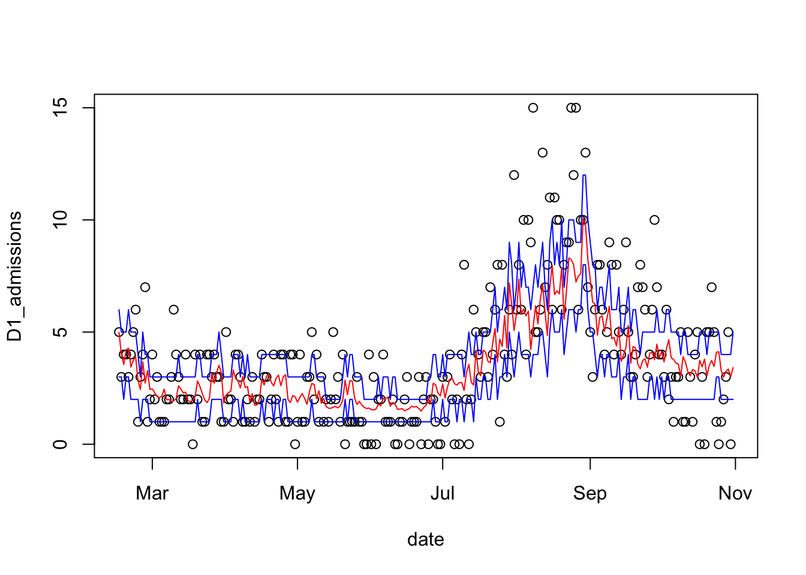

6 Example: COVID-19 admissions
We turn now to our other example: predicting the number of hospital admissions for COVID-19 in the next day.
# create a variable for the one-day ahead admissions:
covid$D1_admissions = lead(covid$COVID_NEW_ADM_CNT, 1)
# create the validation split
covid_split = validation_time_split( covid, prop=0.5 )
# extract the training data
admits_train = training( covid_split$splits[[1]] )6.1 Checking whether observations are independent
Let’s again begin by validating the assumption that the observations are independent. In particular, this is another time series and the most common form of dependency in time series data is for an observation to be correlated with the observations that come before and after. Let’s check this data’s autocorrelation function:
layout( matrix(1:2, 1, 2) )
with( admits_train, plot( date, COVID_NEW_ADM_CNT, type='l') )
acf( admits_train$COVID_NEW_ADM_CNT )
As in the case of overnight occupancy, there is a lot of autocorrelation. We therefore apply the same technique of checking whether the daily increments are correlated.
layout( matrix(1:2, 1, 2) )
with( admits_train, plot( date, c(NA, diff(COVID_NEW_ADM_CNT, 1)), type='l') )
acf( diff(admits_train$COVID_NEW_ADM_CNT, 1) )
Here the result is not as clean as it was for the overnight census count, but the imprevement is enough that we can proceed with modeling.
6.2 Distribution of the response
Take note, again, of the time series of daily admissions:
# plot the daily admissions time series
with( admits_train, plot( date, COVID_NEW_ADM_CNT, type='l') )
Some salient features: the data are integer counts, non negative. And if you imagine a smooth curve running through the noisy data, you’ll see that when this imagined line is at its peaks, there is a lot of noise in the observations. On the other hand, when the smoothed curve is at its lowest, then the amount of noise in the counts is also at its lowest. These are all features of data that match a Poisson distribution. The other requirement is that the patients are admitted to the hospital independently of each other (we can’t validate this assumption from the data). We will proceed under the assumption that the data are from a Poisson distribution.
6.3 Boosted forest model
Recall that we are planning to use a boosted forest model to predict the number of new admissions. The model type was chosen for its flexibility, but that flexibility can come with complexity as there are several tuning parameters to set for a boosted forest model. I’ve provided a simple wrapper function called gbm_wrapper() in the gbmwrap package, which sets tuning parameters to useful default values, and automates the feature selection process, which we don’t have time to talk about today.
For a boosted forest model, we have already validated the assumption that the data are (conditionally) independent. It remains to test that the model’s relationship between the predictors and the response is accurate, and that the distribution of the response is as specified in the model (in this case, Poisson).
6.4 Validating the model
In order to validate the last two assumptions, we will use the same test/validation split as in the prior example.
# remove columns that aren't used in prediction
admits = admits_train[, c(2:28, 30:67)]
# add the D1_admissions column to admits
admits$D1_admissions = admits_train$D1_admissions
# set a random seed so that the cross-validation in gbm_wrapper is reproducible
set.seed(20211118)
# make a call to gbmwrap
boost = gbm_wrapper(target="D1_admissions", data=admits, distribution="poisson")Now that we’ve estimated a model for the data, we can validate the assumption that the model accurately describes the relationship between the predictors an the response, and the assumption that the responses are from a Poisson distribution with the model giving the mean.
I’ll demonstrate two approaches to validating the first assumption: first, I’ll compare the error from the model’s predictions to the error you’d see by simply projecting the last data point forward by one day. Then I’ll plot the predicted admission counts against the observations to see if the predictions look reasonably accurate.
I’ll validate the assumption that the responses are from a Poisson distribution by adding the confidence intervals of a Poisson distribution to the plot to judge whether they cover the desired proportion of the data.
# extract the validation set from the split
admits_test = testing( covid_split$splits[[1]] )
# predict counts on the validaton data
admits_preds = predict( boost, admits_test, type='response' )## Using 1302 trees...# calculate the mean absolute error of the predictions
cat( "Mean absolute error for the model: ",
mean( abs( admits_preds - admits_test$D1_admissions ), na.rm=TRUE),
"\nMean absolute error for the lag-1 observations: ",
with( admits_test, mean( abs( COVID_NEW_ADM_CNT - D1_admissions), na.rm=TRUE))
)## Mean absolute error for the model: 1.644679
## Mean absolute error for the lag-1 observations: 2.081395# calculate poisson predictive intervals
admits_ci = data.frame( lower=qpois(0.25, admits_preds),
upper=qpois(0.75, admits_preds))
# plot the daily admissions in the validation data
with(admits_test, plot( date, D1_admissions ))
#add a line for the predictions out of the model
lines( admits_test$date, admits_preds, col='red')
#add lines for the prediction 50% interval
lines( admits_test$date, admits_ci$lower, col='blue')
lines( admits_test$date, admits_ci$upper, col='blue')
# calculate coverage of the prediction interval
cat( "Prediction interval coverage (nominal 50%): ",
mean(admits_test$D1_admissions >= admits_ci$lower &
admits_test$D1_admissions <= admits_ci$upper, na.rm=TRUE ))## Prediction interval coverage (nominal 50%): 0.5852713Our boosted forest model has the lower prediction error, and the coverage of the prediction interval is fairly similar to the nominal 50%. This model isn’t perfect, but validation doesn’t reveal any terrible behavior and the model is useful.